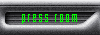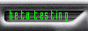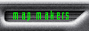
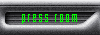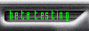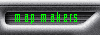 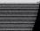
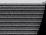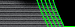


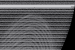
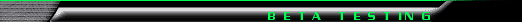
| 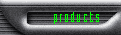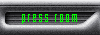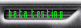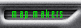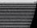 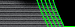 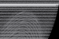 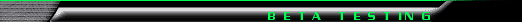 |
|
| Currently we are looking for Mac users with the following configuration :
Software available (or soon available) for beta-testing:
French Touch beta-testing program description : We are always looking for power users who wish to help us testing our upcoming products.
1) What is beta-testing ? You get pre-release of the softwares either by e-mail or on an server, which you have to test according to a "test program" which defines what part of the program we expect you to test and on which game design elements (interface or music) we need your opinion.
2) What are the restrictions ? Registering as a beta-tester for French Touch means you explicitly agree to:
Testers that do not respect the agreement will be immediately deleted from our list.
3) Which benefits can a beta-tester expect from his work ? When participating in our beta-testing program, you will
(*) conditions may change depending on the software. Full conditions will be specified to testers when beta-testing of the product begins.
Applying to French Touch Beta-Testing program : To register a as beta-tester for French Touch, just fill carefully the form on the applying page. When a beta version of a program is available we select some beta testers in the list depending on the test program and their configuration and send them an e-mail they have to answer to in order to get the beta. Questions related to French Touch beta testing program can be sent to beta@french-touch.net. |
[News | Products | Support | Press | Beta-testing | Map Makers | Inside French Touch]